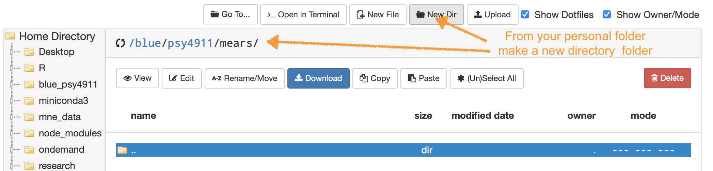
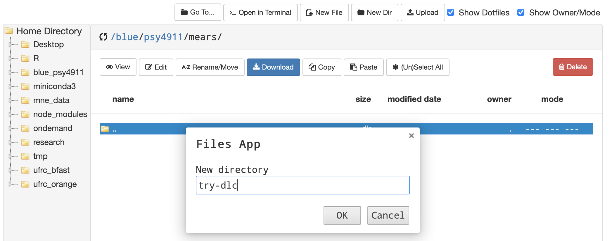
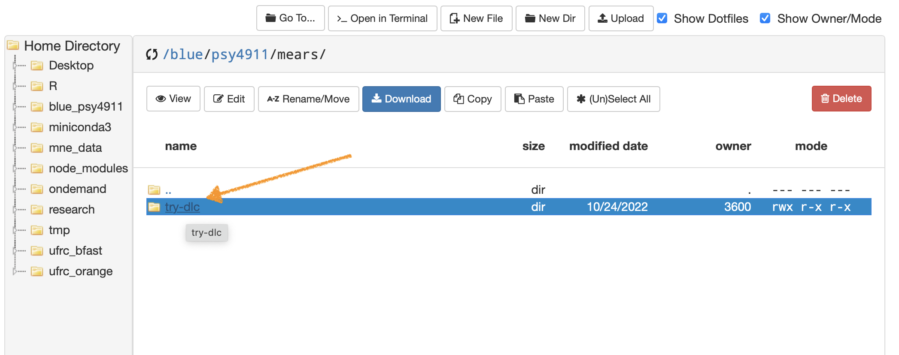
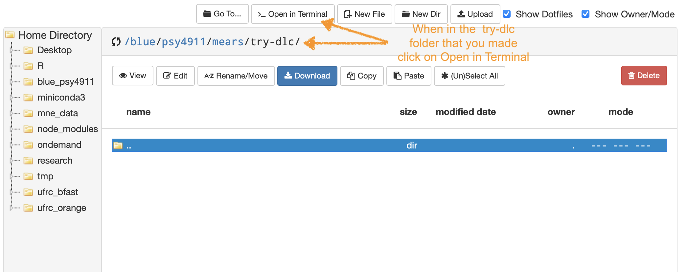
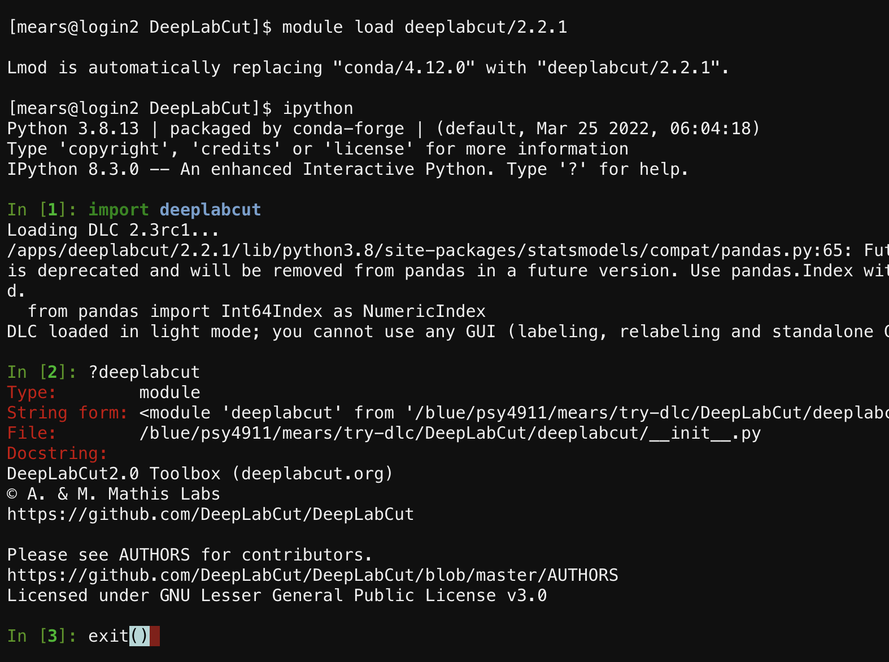

UF Research Computing Help & Documentation (link)
Create a folder for downloading files and examples to your blue drive for learning DeepLabCut
- There are two ways to navigate the blue drive filesystem: OpenOnDemand GUI & Terminal (command line)
- if you’re not sure how to navigate to a directory from the command line go to these links:
- Create a new folder so that you can do DeepLabCut tutorials and examples
- 
- Navigate to your blue drive personal folder “/blue/psy4911/yourname/” then make a folder named try-dlc
- 
- The easiest way to start out in terminal from OOD is to click on the folder that you made
- 
- …then from that location click Open in Terminal
- 
Clone all example material from GitHub to a folder on your Blue Drive
- From the chosen folder on your /blue/psy4911/yourname/ folder install DeepLabCut using the following commands in terminal:
module load condagit clone https://github.com/DeepLabCut/DeepLabCut.git
- Navigate to the new folder /blue/psy4911/yourname/DeepLabCut/ by typing
cd DeepLabCut/deeplabcut - to run from the command line type
module load deeplabcut/2.2.1 - then type
ipython - if you type
?deeplabcuton the command line you can see that everything in DeepLabCut 2.0 is available from the command line - type
exit()to leave ipython

NEXT go to the HiPerGator DeepLabCut Jupyter Notebooks tutorial…
- To Run Napari from the remote GUI on HPG start HiperGator Desktop then open a terminal on the desktop and type:
module spider Naparimodule load napari/0.4.7Napari